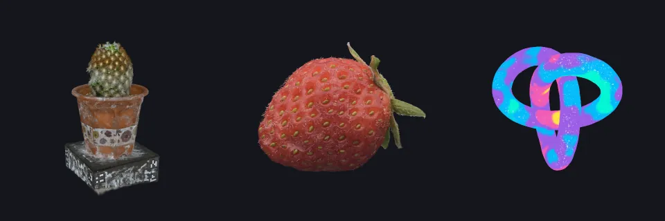
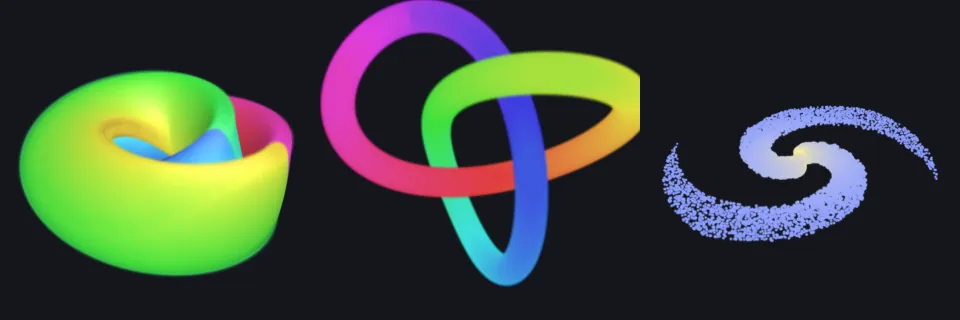
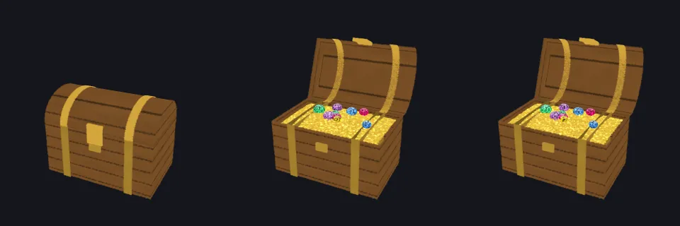
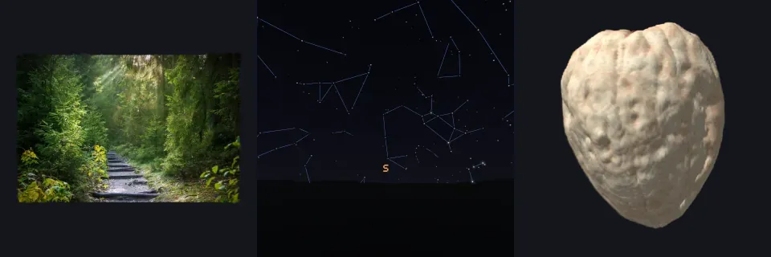

What Splashery can do that other splat tools can't
PlayCanvas is the engine that draws the splats, and its editor, SuperSplat, works on captured splat files: you crop, clean, and arrange a capture. Splashery starts from the other end, because most of its toys are never captured at all. These are things we have not seen in other public splat tools. (We have not tried every tool, so read this as "to our knowledge".) The site has this list as a page too: What Splashery can do.
-
Toys made from rules, in the browser. A recipe of a few kilobytes is built into
splats on your device. Its base budget is 60,000 to 400,000 splats, depending on the
device and, in labs, the Detail slider; a recipe that asks for more density gets more, up
to the tier's most, so those are the budget a toy is asked for, not a count every toy
draws. The shape itself is never a multi-megabyte file to download. (The page, the engine,
and any optional models or captures a toy uses still download, and only when that toy
opens.)

A cactus, a strawberry, and a knot: three toys built from rules, not downloaded as shapes. -
Equations as a language. Type x, y, and z in
u, v, and t, and get an animated splat shape, with plain
messages instead of crashes (Chapter 3).

Three programs of the equation toy: a Klein bottle, a trefoil knot, and a galaxy. -
Moving parts inside one splat cloud. Hinges, pivots, sliders, morphs, and per-splat
effects run on the graphics chip, so a chest opens and a windmill turns without rebuilding
anything (Chapter 2).

A chest opening on a hinge: one splat cloud, three moments. -
Hands-on physics on splats. Toss, stack, pull apart, and pour.
A rubber duck at rest, tossed, and tumbling. -
Anything as splats. Photos and videos with depth, PDFs, QR codes, real science
data, the night sky, and medical volumes.

A photo, the night sky, and a scanned volume, all as splats. -
A whole scene in a link. The
#s=links carry the toys, their options, and the camera. How they work:-
The scene is written as JSON, compressed with raw deflate, and written in base64url,
with a
d.in front (src/codec.js). Where a browser cannot compress, the link carriesj.and the same JSON, uncompressed but still in base64url, so it is not readable as plain text. Share links and QR codes explains the whole path. - A link carries settings, not your files. A photo or a splat file from your device has to be opened again by whoever opens the link.
- No server is involved. The link is the whole scene.
A tiny scene (a cactus and a camera), taken through the real link code, stage by stage. -
The scene is written as JSON, compressed with raw deflate, and written in base64url,
with a